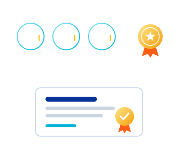

Inglés
Del 2.° al 4.° ciclo completas el nivel de inglés requerido, con el Centro de Idiomas.

Ficha de la ruta
La base de ofimática de tu acreditación en Computación. Dos cursos prácticos en Microsoft 365 que te preparan para la certificación internacional Microsoft Office Specialist.

PROTECH XP es el modelo de acreditación en Computación del Centro de Informática. Cada estudiante sigue la ruta de aprendizaje de su carrera: tres cursos de su agrupación y un Taller de Certificación Internacional.
Word 365 y Excel 365 forman el núcleo de ofimática de esa ruta en las agrupaciones de Ciencias de la Salud, Ciencias Sociales y Jurídicas, Ciencias Empresariales, y Diseño, Artes y Comunicación. Con ellas redactas informes y tesis con formato profesional, y organizas y analizas datos con criterio.
Puedes llevar ambos cursos en paralelo y completar tu ruta con un tercer curso de tu agrupación, como Diseño con Canva, Power BI o SPSS.

La acreditación en Computación es un requisito de egreso de los planes de estudio de la Universidad Señor de Sipán, institución licenciada por la SUNEDU. Sin el requisito validado no se emite la Constancia de Egresado ni el expedito para el grado académico de Bachiller, paso previo al título profesional.
Del 2.° al 4.° ciclo completas el nivel de inglés requerido, con el Centro de Idiomas.
En el 5.° y 6.° ciclo completas 4 cursos de Computación, con el Centro de Informática.
Del 7.° al 9.° ciclo completas 3 cursos de emprendimiento, con el Centro de Emprendimiento.
Sugerencia: puedes avanzar llevando cursos de las otras acreditaciones en paralelo. Así optimizas tu tiempo y cumples todos los requisitos de manera más eficiente.
Los contenidos siguen los objetivos del examen Microsoft Office Specialist, nivel Asociado, para que el curso y la certificación apunten al mismo resultado.
 XP-W365
XP-W365
 XP-E365
XP-E365
Estos son los ejes de contenido. Solicita el sílabo vigente de cada curso al Centro de Informática.
Aprendes haciendo. Cada sesión se trabaja directamente en Microsoft 365, con ejercicios y casos aplicados a tu carrera.
Tu avance se evalúa durante todo el curso con prácticas calificadas. Apruebas con nota mínima de 14.
Cierras la ruta con el Taller de Certificación Internacional y rindes el examen Microsoft Office Specialist en la plataforma Certiport.
Cuando completes tus cuatro componentes, solicita que el requisito se registre en el sistema de Grados y Títulos.

Consulta horarios y secciones disponibles, o revisa el catálogo completo por agrupación.